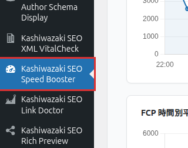
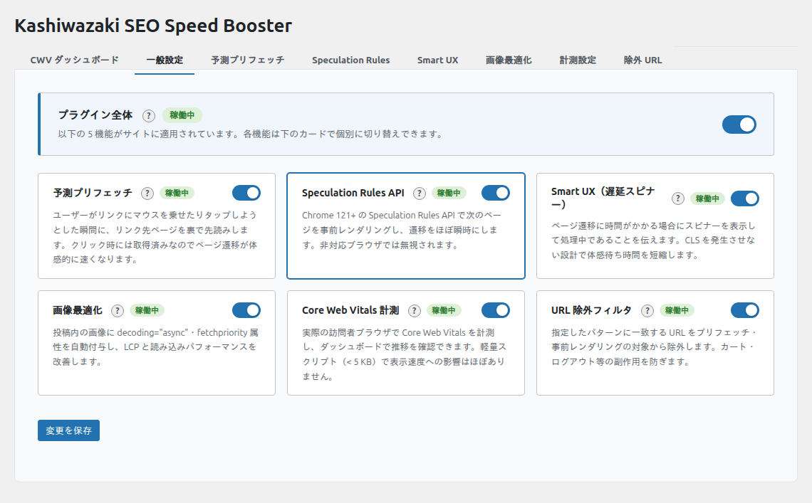

インストール・初期設定
プラグインのインストールから初期設定まで、ステップバイステップで解説します。
インストール方法
プラグインをアップロード
kashiwazaki-seo-speed-booster フォルダを /wp-content/plugins/ にアップロード（または ZIP ファイルを管理画面からアップロード）します。
プラグインを有効化
WordPress 管理画面の「プラグイン」一覧で「Kashiwazaki SEO Speed Booster」を見つけ、「有効化」をクリックします。
管理画面の左メニューに追加されます
有効化すると、左メニューに「Kashiwazaki SEO Speed Booster」が追加されます。クリックして設定画面を開いてください。

ヒント
メニューアイコンは dashicons-performance（スピードメーター）です。WP-CLI を使う場合は wp plugin activate kashiwazaki-seo-speed-booster でも有効化できます。
管理画面の構成
管理画面は7つのタブで構成されています。各タブはそれぞれ独立して保存でき、他のタブの設定に影響しません。
| タブ | 説明 | 詳細ページ |
|---|---|---|
| 一般設定 | プラグイン全体の有効/無効と各機能のマスタースイッチ | 本ページ下部 |
| 予測プリフェッチ | リンク先の事前読み込みトリガーとディレイ設定 | 予測プリフェッチ |
| Speculation Rules | Speculation Rules API の事前レンダリング/プリフェッチ設定 | Speculation Rules |
| Smart UX | ページ遷移スピナーの表示閾値・ロゴ・背景色 | Smart UX スピナー |
| 画像最適化 | loading / decoding / fetchpriority 属性の自動付与 | 画像最適化 |
| 計測・ダッシュボード | Core Web Vitals の収集・グラフ表示・CSV エクスポート | 計測ダッシュボード |
| 除外 URL | 最適化対象外の URL パターン設定 | 除外 URL パターン |
一般設定タブ
一般設定タブは、プラグイン全体のマスタースイッチと各機能の ON/OFF を管理するタブです。

| 設定項目 | キー | 種類 | デフォルト | 説明 |
|---|---|---|---|---|
| プラグイン全体の有効化 | enabled |
チェックボックス | OFF | 全機能のマスタースイッチ。OFF だと個別機能が ON でも動作しない |
| 予測プリフェッチ | prefetch_enabled |
チェックボックス | OFF | 予測プリフェッチ機能の有効/無効 |
| Speculation Rules | speculation_enabled |
チェックボックス | OFF | Speculation Rules API の有効/無効 |
| Smart UX（遅延スピナー） | smart_ux_enabled |
チェックボックス | OFF | Smart UX スピナーの有効/無効 |
| 画像最適化 | image_enabled |
チェックボックス | OFF | 画像属性自動付与の有効/無効 |
| Core Web Vitals 計測 | metrics_enabled |
チェックボックス | OFF | CWV 計測の有効/無効 |
| URL 除外フィルタ | exclude_enabled |
チェックボックス | ON | 除外 URL パターンの有効/無効 |
注意
「プラグイン全体の有効化」がオフの場合、他のスイッチがすべてオンでも機能しません。必ず最初にプラグイン全体を有効化してください。
推奨初期設定
プラグイン全体を有効化
「一般設定」タブで enabled をオンにします。
計測を有効化して現状を把握
metrics_enabled をオンにして、まず現在のパフォーマンスを把握します。1〜2日待ってデータを確認してください。
予測プリフェッチを有効化
最もリスクが低い最適化です。prefetch_enabled をオンにし、プリフェッチタブでホバー検知を有効にしましょう。
他の機能を順次有効化
1〜2日データを確認してから、画像最適化 → Speculation Rules → Smart UX の順に有効にします。各機能の詳細は個別ページを参照してください。
おすすめ
すべての機能を一度に有効にせず、1つずつ有効にしてダッシュボードでパフォーマンスへの影響を確認することをお勧めします。